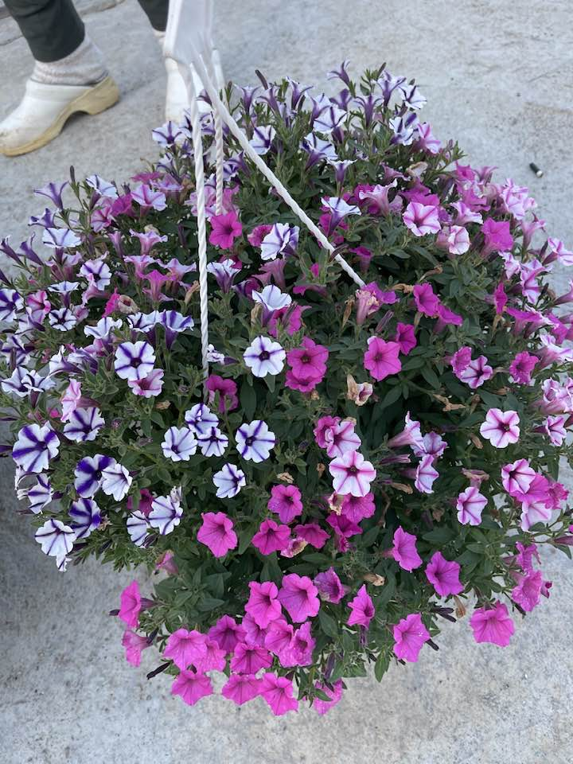
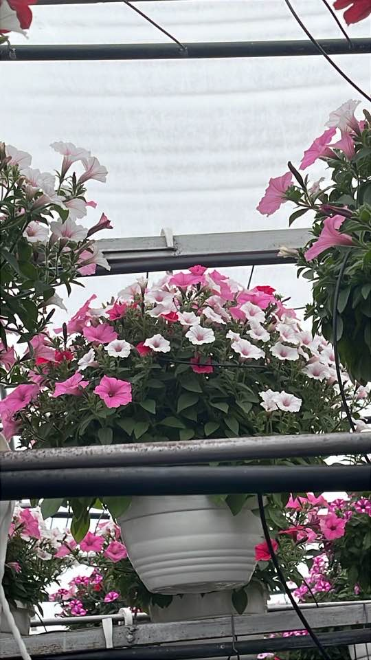
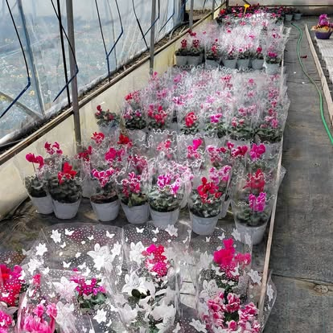
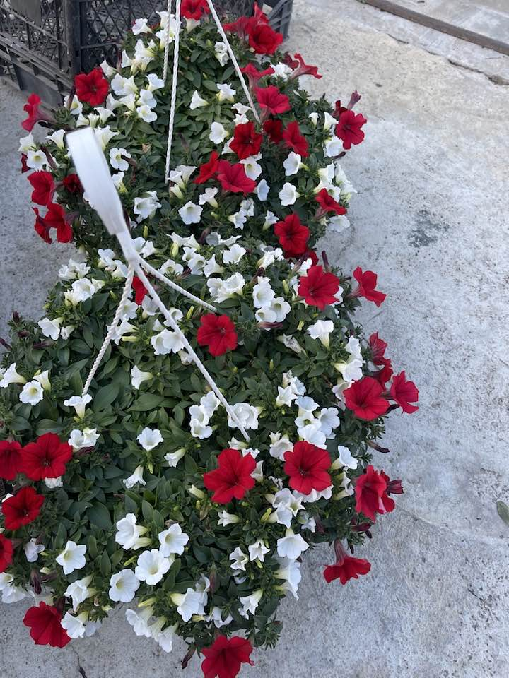

Frumusețea Naturii,
Crescută cu Drag în Micești
Producător local de flori sezoniere și aranjamente deosebite pentru casa și grădina ta.

Pasiune pentru Horticultură
Situată pe Strada Apuseni nr. 115 în Alba Iulia, mica noastră afacere de familie transformă pasiunea pentru plante în explozii de culoare pentru comunitatea noastră.
De la delicatele primule de primăvară până la bogatele mușcate ce înfrumusețează balcoanele pe tot parcursul verii, fiecare floare este îngrijită cu atenție și respect pentru natură.
Colecția de Sezon
Descoperă vedetele momentului în serele noastre

Muscate (Geraniums)
Reginele verii, ideale pentru balcoane însorite și ferestre pline de viață.

Aranjamente Cadou
Pentru momente speciale, create cu flori proaspete și multă creativitate.

Flori de Grădină
O pată de culoare în curtea ta, adaptate climatului local pentru o creștere sănătoasă.
Vino să ne vizitezi
Te așteptăm în serele noastre pentru a alege cele mai frumoase flori direct de la sursă.
Strada Apuseni nr. 115, Micești, Alba Iulia
Luni - Sâmbătă: 09:00 - 18:00
Sere Flori Micești